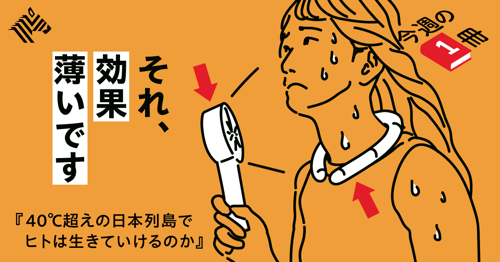
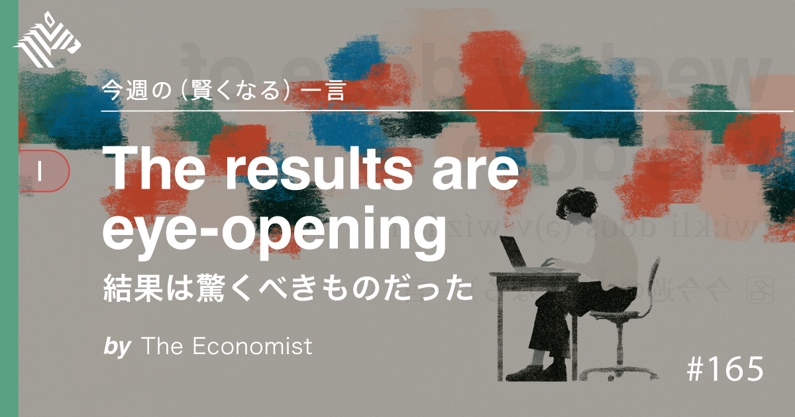

01
【夏の新常識】よくある「暑さ対策」実は眉唾でした
発行日時：2026年8月23日 05:30 JST ・ NewsPicks編集部

あなたに関係ありそうな理由
酷暑下の外出・運動・屋外作業を、体感ではなく、環境と体調を合わせて設計する必要があるためです。
概要
40℃を超える日が増える日本で、暑さをどうしのぐかを、早稲田大学名誉教授の永島計氏への取材で掘り下げた記事です。記事の出発点は、体が熱を逃がす仕組みです。暑くなると皮膚の血管を開いて熱を表面へ運び、それでも足りなければ汗を蒸発させて熱を奪います。ところが高温多湿ではこの二段構えが働きにくく、体の内側に熱が残ります。首に着ける冷却リング、メントール入りスプレー、冷却シートは、冷たく感じること自体には意味があっても、体温を下げる効果は限定的だと説明します。涼しいという感覚が強いほど、危険信号に気づきにくくなる懸念もあるためです。空調服も、極端な高温では熱い空気を取り込むだけになり得ます。ハンディファンも、汗や濡れたタオルと組み合わせて気化熱を促す場合と、乾いた空気を少し当てるだけの場合では働きが違います。記事は、オフィスを冷やし過ぎた環境と屋外を頻繁に行き来すると、自律神経の負担が増すと説明します。ただし冷房を我慢することを勧めてはいません。昼間は室温をやや高めに保ち、睡眠時はしっかり冷やすような調整を選択肢に挙げます。屋外労働では、作業強度別のWBGT基準を確認し、休憩だけでなく体を効率よく冷やす仕組みや、ウェアラブルでの体調把握を考える必要があるとします。特に、汗をかく量やのどの渇きだけを安全の物差しにしない点が重要です。年齢、睡眠不足、持病、前日の疲れなどで熱への耐性は変わります。暑さに慣れる「暑熱順化」も、暑い日を無理に我慢する理由にはならず、毎回の条件を見直す必要があります。冷たい飲み物や日陰は補助であって、長時間の高温曝露を帳消しにはしません。職場なら一律の休憩時刻ではなく、直射日光と作業内容が変わる時間帯に合わせ、移動や設営も含めた負荷を見積もることが求められます。最後に示すのは、気温だけでなく環境と自分の状態を知り、日頃の運動で体温調節の土台を整えることです。表示コメントでも、体感の涼しさと安全を混同せず、WBGTや個々の体調に基づいて行動を変えるべきだという論点が中心でした。屋外予定の可否を早めに決めることも、熱をためない備えになります。無理をしない判断が重要です。
仕事や会話で使える一言
暑さ対策は、涼しく感じるかではなく、熱を逃がせる条件で決める。
NewsPicks原文を読む
02
【ミニ教養】AIを使う子どもほど、テストの点数が悪くなる
発行日時：2026年8月23日 05:30 JST ・ NewsPicks編集部

あなたに関係ありそうな理由
AIを使う学びと、本人が考える時間をどう両立させるかは、家庭・教育・人材育成すべてに関わるためです。
概要
生成AIを使う中高生の学習成果を追った中国の調査を紹介し、便利なAI利用がそのまま学力につながるわけではないと問う記事です。ストックホルム大学と香港の研究者による研究は、12〜18歳の生徒約2万7000人を対象にしました。AI利用者は約8割、非利用者は約2割で、六カ月間の推移を見ると、AIを使う生徒は宿題の平均点を18％伸ばし、宿題にかける時間を64分から45分へ、およそ3割減らしました。一見すると効率化の成果ですが、AIを使えないテストでは、利用者の成績が非利用者より20％低かったといいます。AI利用が二年続いた場合には、高校・大学の統一試験の得点への影響がそれぞれ24％、18％の低下として表れたという結果も示されます。記事が重視するのは、AIを使ったこと自体ではなく、何をAIに任せ、何を自分で考えたかです。宿題を最も速く終える非利用者よりも速く終える「アウトソーサー」の割合は、五カ月で58％から81％へ増え、特に成績が低い生徒で目立ちました。一方、AIを使っても非利用者と同程度の時間を使った生徒の成績は同程度でした。AIを答えの近道にしたのか、考え方を確かめるコーチにしたのかで差が出た可能性を示します。研究の数値は中国の生徒集団に基づき、すべての国や年齢に機械的に当てはめるものではありません。それでも、宿題の点とテストの点が逆向きに動いたことは、成果物だけを評価する限界を示します。AIへの質問を工夫する力も重要ですが、返ってきた答えの誤りを見抜けなければ、学習の穴を隠すだけになります。教師は口頭説明や途中式、反論を求めるなど、考える過程を見えるようにする必要があります。記事は、AIが子どもを一律に「だめにする」と結論づけるものではありません。基礎的な読み書きや計算、問題を分解し、出力を評価する力を残した上で使う設計が必要だということです。表示コメントでも、完成した宿題の見栄えだけでなく、途中で何を考えたかをどう評価するか、AIの答えを吟味する力をどう育てるかが論点になりました。家庭でも職場でも、短縮できた時間を学びの省略にせず、検証と説明に使えるかが問われます。その見極めが必要です。
仕事や会話で使える一言
AIに任せた時間ではなく、自分で考えた時間が学びを残す。
NewsPicks原文を読む
03
【激化】「富を吐き出せ」テック企業に圧力高まる
発行日時：2026年8月23日 05:30 JST ・ The New York Times
あなたに関係ありそうな理由
AIデータセンターの成長は、企業価値だけでなく、地域の電力・水・税負担と受益の設計に直結するためです。
概要
AIブームで急成長するテック企業に対し、地域が電力や水の負担に見合う還元を求め始めた構図を追う記事です。米バージニア州の「データセンター・アレー」では、一年にわたる交渉の末、大量の電力を使う施設へ課税する法案が成立しました。州には翌年、最大6億ドルの税収が見込まれるとされます。AIは2030年までに世界経済へ15兆ドルの価値を生み出すという予測もある一方、その設備が立つ地域では、電力や水の消費に比べ雇用が少ない、税優遇の効果が住民に届かないという不満が出ています。記事は、地域での規制や新設停止の動きと、全国規模の富の再分配論を分けて描きます。地域側では、施設ごとに電力網への負担、用水、税収、建設・運営の雇用をどう測るかが焦点です。過去二年で約120の地方政府が建設の一時停止を検討または実施し、ニューヨーク州では全州的に一年間の新設停止と優遇策の再検討を求める動きもあります。対してサンダース上院議員は、大手AI企業の株式の50％を一度だけ政府が取得し、7兆ドル規模の政府系ファンドへ入れる案を提示しました。市民への即時配分と継続的な再分配を構想しますが、企業側は支持していません。どちらも「AIの富を社会へ戻す」という言葉で語られても、前者は立地地域の外部不経済をどう補うか、後者は国家全体で富の集中をどう扱うかという別の問題です。AI企業側は一律の規制より、場所ごとに事情を見てほしいと反論します。電力網の余力や水の確保、雇用の内容は地域で異なるためです。だからこそ、誘致を「成長」か「反対」かの二択にせず、優遇策を含めた契約の条件を住民に説明できるかが鍵になります。データセンターの需要増加は電力計画にも長く影響するため、短期の税収だけで判断しにくい面があります。記事は、AIによる繁栄が広く共有されるのか、雇用減少と富の集中を強めるのかという二つのシナリオを示します。表示コメントでも、データセンター建設によるGDPや仕事と、地域が負う資源コストは分けて評価すべきだという意見が中心でした。今後は、規制の強弱だけでなく、案件ごとの電力・水・雇用・税収の根拠を見て、負担と受益がつり合うかを確認したいニュースです。
仕事や会話で使える一言
AIの地域負担と富の再分配は、同じ「課税」でも別の問題として考える。
NewsPicks原文を読む
04
カナダ、200億ドル規模の対米報復関税を発表-鉄鋼や電子機器など
発行日時：2026年8月23日 00:52 JST ・ Bloomberg
あなたに関係ありそうな理由
北米の関税対立は、調達・輸出入だけでなく、国境をまたぐ自動車や部材の供給網のコストに波及するためです。
概要
米国との通商協議が決裂した後、カナダが約200億ドル規模の対米報復関税を9月8日に発動すると伝えるブルームバーグの記事です。米国は21日夜、カナダからの輸入品のうち約200億ドル、約3兆1800億円相当に50％の関税を課しました。対象には合板、酒類、電気機器、ホッケー用品などが含まれます。カナダはこれと同規模の対抗措置を表明し、鉄鋼、乳製品、家電、農業機械、パルプ・紙、電子機器を対象にする方針です。詳しい品目は今後示されます。米国は1930年関税法の338条を根拠にしたとされ、カナダが米国を不当に差別しているとの主張を掲げます。記事によれば、この条項の発動は初めてです。両国の2025年のモノとサービスの貿易額は約9000億ドルに達し、対立がエスカレートすれば広い範囲で取引が揺らぎます。争点は単なる関税率ではありません。米国はトラック製造や、カナダが第三国と結ぶ協定の扱いも求めており、USMCAをめぐる交渉にも影を落とします。国境をまたいで部材を行き来させる北米の産業では、一つの完成品だけを見ても負担は読めません。関税を納めるのは輸入業者であり、その費用が価格、契約、調達先の変更を通じてどこへ移るかが実務上の焦点です。そのため、完成品メーカーだけでなく、物流、部材、保守、販売まで影響の伝わる順番が違います。カナダの報復が米国の輸入業者や消費者へどう戻るのかも、対象によって変わります。対立が長引けば、関税そのものに加え、契約見直しや通関の手間、不確実性に備えるコストも増えます。交渉再開の条件と、USMCA協議への波及も見逃せません。表示コメントでも、日本の自動車関連を含む北米の供給網、輸入コストの価格転嫁、代替調達の難しさが論点になりました。報復関税は政治的には対称な数字に見えても、対象品目ごとに依存度と代替可能性は異なります。今後は詳細品目、適用除外、発効日だけでなく、各企業が在庫や契約をどう調整するかを見る必要があります。強い発言だけを追わず、誰が支払い、どの段階で価格になるのかを確認することが、影響を読み違えない出発点です。実際の負担の変化と長期の契約条件も追いたいところです。
仕事や会話で使える一言
関税は、税率よりも、誰が払い、どの供給網で価格になるかを見る。
NewsPicks原文を読む
05
トランプ氏、6月は1000件超える証券取引－政府倫理局が開示
発行日時：2026年8月23日 05:59 JST ・ Bloomberg
あなたに関係ありそうな理由
政策を動かせる立場の資産運用では、違法性の有無と別に、制度への信頼や説明責任が問われるためです。
概要
米政府倫理局への開示から、トランプ米大統領が6月だけで1000件を超える証券取引をしたことが分かったと伝えるブルームバーグの記事です。個別の開示は金額を幅で示すため、6月の取引総額は7810万ドルから2億6310万ドルの範囲です。最大の取引として、6月22日にバンガードのETFを500万〜2500万ドル売却したことが挙げられています。パランティア株は3日に1001〜1万5000ドルを購入し、16日にも追加で買い、18日には50万〜100万ドルを売却、その後も23日と24日に買い付けています。記事は、中東停戦に関する発言の後に取引があったこと、バークシャー・ハサウェイ株も18日に100万〜500万ドルを買い、24日に小規模な売却があったことなどを列挙します。メタ、コインベース、ビザ、ホーム・デポなども対象でした。2025年全体では2万1000件超、6億〜18億6000万ドル規模の取引が開示されたとされます。ただし、取引の時期が政策や発言と重なって見えることだけで、因果関係や不正が証明されるわけではありません。記事も違法行為を立証していません。ホワイトハウスは運用が独立して管理されていると説明し、エリック・トランプ氏はブラインドトラストで受託者へ権限を委ねていると述べました。それでも、政策によって市場が動き得る立場の資産取引は、実際の不正の有無とは別に、利益相反に見える可能性や制度の信頼を問う問題になります。取引を監視する側に必要なのは、取引リストを眺めることだけではありません。政策発表との時間的な近さ、事前のルール、例外の扱い、第三者による確認をそろえて見て、制度の説明が検証に耐えるかを確かめることです。記事の数字は出発点です。表示コメントでも、問題は「不正があるか」だけではなく、国民が疑わなくてよい仕組みをどう整えるかだという意見がありました。報道を読む際は、取引件数や金額だけで断定せず、開示の範囲、運用を誰が決めたのか、倫理規則や独立性が実質的に機能しているかを分けて確認する必要があります。政治的な印象と検証済みの事実を混同しないことが、このニュースの重要な読み方です。
仕事や会話で使える一言
権力者の資産運用は、違法性だけでなく、疑われにくい仕組みで評価する。
NewsPicks原文を読む